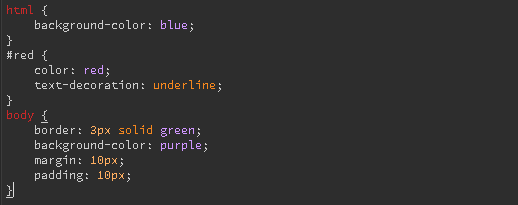

For this chapter we will look at the basic css code like color, margins, borders, padding and more!

when looking at css code we can split it into two parts, the content we will be changing and the code that will change it.
in this image we can see that there some red words and a white word at the start of some blocks of text. The white word is an id, we will come back to that in chapter 5, and the red words represent the html tags they corraspond to, body being body and html being html.
inorder to start a line of css code, you type tagname { }
in chapter 3 we will look at the styling code.